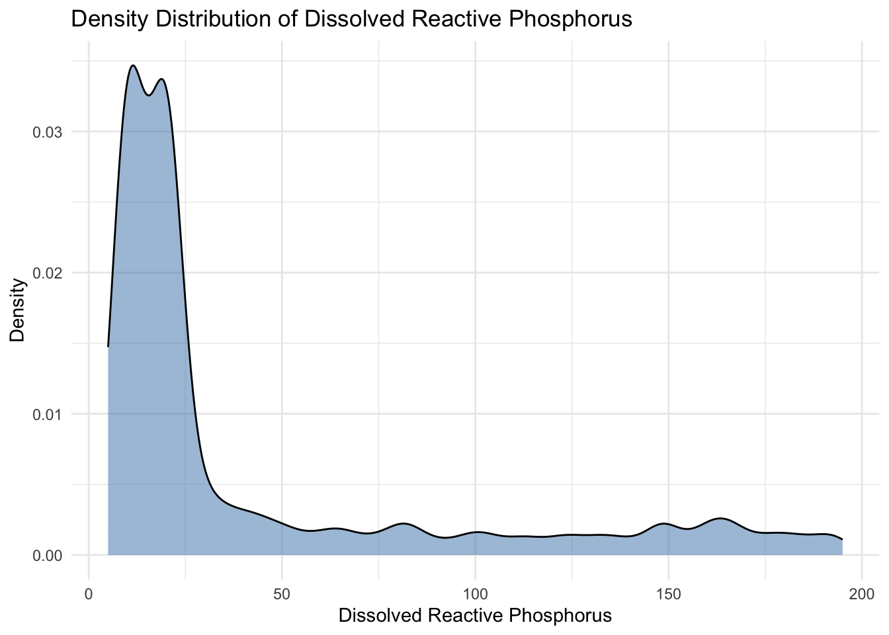
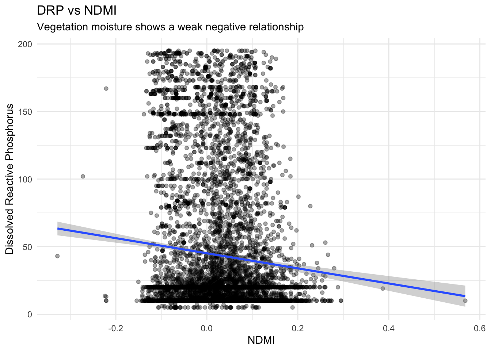

Rivers in South Africa are impacted by agriculture, urbanization, and climate varibles. Water quality testing and is important in order to maintain a safe water source to the public and environment. However, field-based testing monitoring is expensive and has geographical limits, especially across large river systems.
Advances in satellite remote sensing provide new forms of opportunities when it comes to testing and monitoring water quality. The use of imagery and climate datasets helps to study the condtions of rivers in South Africa. In this analysis we will use imagery and climate datasets to see if they can explain the water quality of rivers across South Africa
The overarching question for the project was:
Can we accurately forecast river water quality parameters in South Africa using publicly available satellite and climate datasets?
My contribution focused on Specific Question 5:
Do land use characteristics surrounding each river station improve predictions of Dissolved Reactive Phosphorus (DRP), and which land use type is most associated with elevated phosphorus?
Phosphorus contamination was difficult to detect because it does not present strong spectral signatures in satellite imagery. Therefore, the purpose of the analysis is to determine whether or not land use indicators from the Landsat 8 dataset show meaningful correlations with Dissolved Reactive Phosphorus. These indicators include vegetation and urban density proxies.
Background & Prior Literature
Previous projects and studies have demonstrated that satellite imagery can estimate multiple forms of degradation in water quality. They have mostly shown salinity and sediment related pollution. But as stated previously, phosphorus which is much more difficult to detect.
Olmanson et al. (2011) showed that Landsat imagery could estimate water quality in lakes across Minnesota, while Dabrowski and de Klerk (2013) examined watershed impacts on rivers in South Africa. These projects and studies demonstrated the opportunities and value of remote sensing for monitoring environmental conditions. They mostly focused on watersheds and lakes and conducted the studies in a smaller scale when it comes to the location. The Huizenga et al. (2013) study established a baseline for South African rivers by using historical field measurements. But there study did not integrate satellite based imagery environmental indicators.
This analysis has expanded on the prior work and literature by combining Landsat derived environmental indicators with chemistry observations across rivers in South Africa. For my analysis specifically, I examined whether remote sensing of land use characteristics could provide us with helpful signals for Dissolved Reactive Phosphorus concentrations.
Data Sources and Acquisition
Water Quality Dataset
The primary water-quality dataset was obtained from the South African Department of Water and Sanitation and distributed through the Kaggle EY AI Data Challenge for this current year, this is actually why my group was interested in the data set.
The dataset included: - 9,319 observations - 162 river monitoring stations - measurements collected between 2011 and 2015 - three primary targets: - Total Alkalinity (TA) - Electrical Conductance (EC) - Dissolved Reactive Phosphorus (DRP)
Code
# Load water quality datasetwater_quality <-read_csv("data/water_quality_training_dataset.csv")head(water_quality)
Environmental variables were extracted from Landsat 8 Collection 2 Surface Reflectance imagery. The Landsat 8 data set provided 30 meter spatial resolution and included multiple spectral bands that are useful for this project and analysis.
The analysis focused on: - NDMI (vegetation moisture) - NIR (healthy vegetation) - Green reflectance - SWIR16 (urban/dry surfaces) - SWIR22 (impervious surfaces)
Data quality control was extremely important especially because the Landsat 8 derived land use observations and the water quality measurements were taken throughout multiple time periods. The data sets measurements were also collected from multiple sources.
Unfortunately, the data set contained many missing Dissolved Reactive Phosphorus measurements, therefore, they were removed. The missing values were mostly from stations that found themselves located in the eastern part of South Africa.
The water-quality and Landsat datasets were merged using shared spatial and temporal identifiers.
Cloud contamination represented a major limitation in the Landsat imagery. Approximately 22% of scenes contained substantial cloud cover, while rainy-season conditions rendered nearly 35% of scenes unusable.
Summary stats for the primary variables are shown below.
DRP NDMI nir green
Min. : 5.00 Min. :-0.32829 Min. : 3992 Min. : 4045
1st Qu.: 10.00 1st Qu.:-0.03687 1st Qu.:12724 1st Qu.: 9370
Median : 20.00 Median : 0.02155 Median :14183 Median : 9801
Mean : 43.53 Mean : 0.02137 Mean :14045 Mean : 9983
3rd Qu.: 48.00 3rd Qu.: 0.07330 3rd Qu.:15514 3rd Qu.:10286
Max. :195.00 Max. : 0.56791 Max. :65535 Max. :65535
NA's :1085 NA's :1085 NA's :1085
swir16 swir22
Min. : 3672 Min. : 3634
1st Qu.:11761 1st Qu.: 9840
Median :13704 Median :11265
Mean :13567 Mean :11426
3rd Qu.:15426 3rd Qu.:12896
Max. :65535 Max. :31202
NA's :1085 NA's :1085
Exploratory Data Analysis
The first stage of analysis examined relationships between dissolved phosphorus and Landsat-derived land-use indicators.
Distribution of Dissolved Reactive Phosphorus
Before analyzing relationships with satellite variables, the distribution of DRP concentrations was analyzed.
Code
ggplot(sq5_data, aes(DRP)) +geom_density(fill ="steelblue", alpha =0.5) +labs(title ="Density Distribution of Dissolved Reactive Phosphorus",x ="Dissolved Reactive Phosphorus",y ="Density" )

The density distribution revealed that DRP values were strongly right-skewed. It also showed most observations clustered at relatively low concentrations and a smaller number of stations exhibiting elevated phosphorus levels. The skewed distribution indicates that phosphorus contamination may be driven by localized environmental conditions and/or episodic runoff events rather than broad regional patterns.
Correlation Matrix
To evaluate relationships between DRP and land-use indicators, a correlation matrix was constructed using Landsat-derived variables.
The correlation plot revealed extremely weak linear relationships between dissolved phosphorus and all spectral variables.
Code
# Correlations with DRPcorrelations <- sq5_data %>%summarize(NDMI =cor(DRP, NDMI, use ="complete.obs"),nir =cor(DRP, nir, use ="complete.obs"),green =cor(DRP, green, use ="complete.obs"),swir16 =cor(DRP, swir16, use ="complete.obs"),swir22 =cor(DRP, swir22, use ="complete.obs") )correlations %>%pivot_longer(everything(),names_to ="Variable",values_to ="Correlation" ) %>%mutate(Correlation =round(Correlation, 3) ) %>%gt() %>%tab_header(title ="Correlations Between DRP and Landsat Features" )
Correlations Between DRP and Landsat Features
Variable
Correlation
NDMI
-0.085
nir
-0.005
green
0.008
swir16
0.060
swir22
0.066
ImportantKey Finding
The analyzed correlations between Dissolved Reactive Phosphorus and Landsat land use indicators remained very weak. This suggests that phosphorus is difficult to estimate or detect in satellite imagery. The strongest correlations were located with SWIR22 and SWIR16, but they’re still considered pretty weak and insufficient. With vegetation indicators like NDMI and NIR the correlation was negative. Therefore, it is another weak correlation. No individual Landsat 8 data set land use indicator provides a strong and reliable predictive factor for Dissolved Reactive Phosphorus.
Dissolved Reactive Phosphorus vs NDMI
NDMI was used as a vegetation-moisture proxy to investigate whether greener and wetter landscapes were associated with lower phosphorus concentrations.
Code
ggplot(sq5_data, aes(NDMI, DRP)) +geom_point(alpha =0.35) +geom_smooth(method ="lm", se =TRUE) +labs(title ="DRP vs NDMI",subtitle ="Vegetation moisture shows a weak negative relationship",x ="NDMI",y ="Dissolved Reactive Phosphorus" )

The scatterplot reveals a weak negative relationship between NDMI and Dissolved Reactive Phosphorus concentration. Areas with denser vegetation and higher moisture content tended to exhibit slightly lower phosphorus levels.
However, the large amount of scatter in the data indicates that vegetation alone explains very little of the variation in phosphorus concentration.
Therefore, we can establish that vegetation land use is not a reliable or strong predictor for phosphorus concentration in South African river stations.
A possible explanation for these results is that vegetation land use may reduce nutrient runoff over large time periods, but phosphorus movements or transport is more heavily affected by rainfall events.
Dissolved Reactive Phosphorus vs SWIR16
SWIR16 was analyzed as a proxy for urban density and impervious surfaces.
Unlike NDMI, SWIR16 demonstrated a weak positive relationship with dissolved phosphorus concentration. SWIR16 are usually associated with dry land and urban surfaces like streets or sidewalks. Basically asphalt or cement. This suggests that urbanized or less vegetated areas may contribute slightly elevated phosphorus levels through runoff and impervious surface effects. But the relationship is still very weak overall. We can determine that urban density land use is also not a strong or reliable source of prediction for phosphorus concentration based on the Landsat 8 data set.
Interpretation and Discussion
The major findings of my analysis is that Dissolved Reactive Phosphorus has an extremely weak direct correlation with Landsat derived land use indicators. Unlike other pollutants such as alkalinity and electrical conductance. This result is pretty significant because it shows that medium resolution at 30-meter remote sensing has its limitations when it comes to detecting nutrients. Some factors can help explain the weak correlations that we witnessed while conducting this analysis.
The first one is that phosphorus movements is event driven. Rainfall runoff most likely transports fertilizers and agricultural waste into rivers during certain short periods of precipitation. Sometimes during these time periods the rainfall is quite intense. This makes it difficult especially when using periodic satellite imagery like the one present in the Landsat 8 data set. Phosphorus contamination can also be influenced by localized watershed processes that occur at smaller scales than the Landsat’s 30 meter pixels. Agricultural drainage channels, waste water discharge points, and small scale land management practices or decisions can all be contributing factors to phosphorus variability without producing strong spectral detections or signatures. Another factor is that Dissolved Reactive Phosphorus is not optically strong compared to suspended sediments and salts.
The weak negative correlation between Dissolved Reactive Phosphorus and NDMI indicates that healthy vegetation can suppress phosphorus accumulation through nutrient uptake and erosion control. The weak positive correlation between SWIR16 and Dissolved Reactive Phosphorus can reflect urban runoff from impervious surfaces.
Unfortunately, none of these relationships were strong enough to support reliable phosphorus prediction using Landsat imagery alone.
Connecting to the Overarching Question
The analysis contributes to the overarching question regarding whether satellite data sets can forecast water quality in rivers across South Africa. The results reinforce one of the conclusions of the project, remote sensing performs substantially much more better for salts and mineral related pollutants compared to dissolved phosphorus. Therefore, we can see that pollutant types affect the performance of remote sensing. Other analyses presented stronger predictive correlations for electrical conductance and alkalinity which are considered ionic pollutants, but my analysis demonstrates that phosphorus, which is a dissolved nutrient, remains difficult to estimate spectrally. This suggests that remote sensing can partially explain degradation in rivers, but limitations remain. The inability of Landsat derived land use indicators to reliably predict Dissolved Reactive Phosphorus demonstrates that we must add additional environmental data sets that include information about rainfall, watershed boundaries, and agricultural land use.
Limitations and Future Work
Several limitations affected this analysis. Firstly, the Landsat 8 Imagery dataset had a spatial resolution of 30 meter which may not be sufficient enough to detect localized phosphorus transport mechanisms. Also cloud cover and contamination reduced the number of usable observations, specifically during rainy seasons in which nutrient runoff is much more present. Another limitation is that the analysis focused on linear relationships, there is a possibility of nonlinear correlations that can be explored in the future. Nonlinear correlations between vegetation, watershed processes, and climate conditions can possibly exist.
In order to improve the analysis, we must implement several items: - watershed boundaries - Sentinel-2 imagery will probably provide improved detection of certain land uses - rainfall intensity data - fertilizer application records - ml models capable of finding nonlinear relationships between environmental variables
Conclusion
The analysis tested whether Landsat derived land use indicators could improve the understanding of Dissolved Reactive Phosphorus concentrations in the rivers of South Africa. The results showed that urban density proxies have a weak positive correlation and that vegetation related variables have a weak negative correlation. Basically all the observed correlations remained really small. These results suggest that phosphorus is difficult to estimate using medium resolution satellite imagery on its own. Overall, the analysis presents the strengths and limitations of remote sensing for water quality monitoring and testing in rivers. It reinforces the importance and need of pollutant specific environmental modeling. But remote sensing remains valuable to understanding environmental conditions that are broad, but Dissolved Reactive Phosphorus contamination likely requires additional hydrological and watershed-based information to support a prediction that is much more reliable.